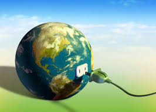
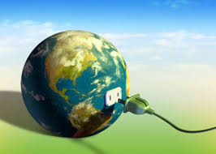

¿Como funciona la transmision de energia electrica?
en el hogar
La conservacion de energia para evitar la contaminacion
La energía es uno de los factores indispensables en nuestra vida cotidiana en nuestro alrededor las casas se hacen sustentables en los ámbitos de la energía las empresas hoy en día están siendo desplazadas ya que la energía de los recursos naturales se ha dado un realce en las ventas para la adquirir los servicio ya que no contamina esa energía ya que se retomara y observaremos sus realces estructurales.
Otro punto importante es que nuestro ecosistema es uno de los más afectados en el mundo de la energía, pues al haber industrias alrededor de la misma y al necesitar espacio para que prospere, el ecosistema es agravado considerablemente ya que los efectos colaterales.
La innovación de las energías a acrecentado la mayor de las ventajas tanto económicamente como la ayuda del ambiente porque cada una de las energías son factores indispensable en cada de las regiones se cuenta una subestación en nuestros alrededores para poder desarrollar la energía nuclear cada una de ellas son indispensables.
.jpg) 

.jpg)
(c)Todos los derechos reservados Diseñado por Mi tio - 2020